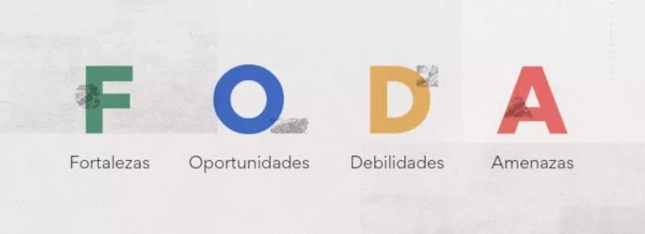
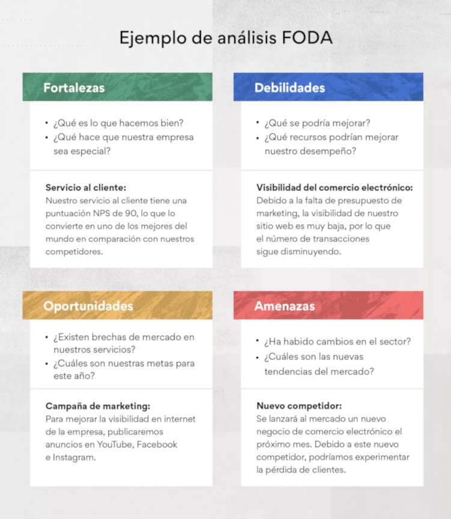

Un Análisis FODA es una herramienta que permite comprender la situación de un proyecto, empresa, persona o institución, analizando sus características internas (Fortalezas y Debilidades) y externas (Oportunidades y Amenazas).
Proviene de las siglas en inglés SWOT (Strengths, Weaknesses, Opportunities y Threats).
Resulta fundamental para una correcta toma de decisiones.
Esta técnica no sólo se utiliza para medir el desempeño con respecto a la competencia, sino que es una importante herramienta en la gestión de proyectos, ya que ayuda a detectar y analizar de manera sistemática todas las variables que intervienen en un negocio. El FODA es una herramienta simple, clara y práctica que facilita la toma de decisiones: contribuye a identificar los obstáculos para cumplir con los objetivos y de esta manera mejorar y modificar el plan de acción.
El objetivo del Análisis FODA es determinar las ventajas y desventajas de un proyecto, empresa, persona o institución, en función de sus características propias y de las del entorno en que se mueve y de esta manera poder planificar en lugar de improvisar la toma de decisiones.
Las fortalezas de FODA hacen referencia a las iniciativas internas que funcionan bien. Se podrían comparar con otras iniciativas o con un costado competitivo externo. Al analizar estas áreas puedes entender qué es lo que ya funciona. Entonces, puedes aplicar esas técnicas que sabes que funcionan bien en otras áreas que pueden necesitar un refuerzo extra como la mejora de la eficiencia del equipo.
Cuando busques las fortalezas de la organización, para empezar, pregúntate lo siguiente:
Las debilidades en FODA se refieren a las iniciativas internas que no funcionan como es debido. Es una buena idea analizar las fortalezas antes que las debilidades para generar referencias de lo que significan el éxito y el fracaso. La identificación de las debilidades internas ofrece un punto de partida desde el cual mejorar los proyectos.
Del mismo modo en que examinas las fortalezas, puedes hacerte diferentes preguntas para empezar a identificar las debilidades.
Las oportunidades en FODA son el resultado de las fortalezas y las debilidades, junto con cualquier iniciativa externa que te colocará en una posición competitiva más sólida. Podría ser cualquier cosa, debilidades que quisieras mejorar o áreas que no se hubieran identificado en las primeras dos etapas del análisis.
Como hay muchas maneras de que se nos ocurran oportunidades, es muy útil considerar las siguientes cuestiones antes de empezar:
Las amenazas en FODA se refieren a las áreas que tienen el potencial de causar problemas. Difieren de las debilidades en que las amenazas son externas y, por lo general, están fuera de nuestro control. Pueden ser eventos como la pandemia o un cambio en el panorama competitivo.
A continuación, te presentamos algunas preguntas que podrías hacerte para identificar amenazas externas:
Una de las maneras más populares en las que se crean los análisis FODA es con representaciones visuales de las fortalezas, oportunidades, debilidades y amenazas. A este formato se lo denomina Matriz FODA. Normalmente se organiza en cuatro cuadrados separados que se unen para formar un cuadrado más grande.
